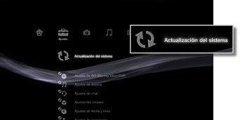

Ajustes > Actualización del sistema
Actualización del sistema
Las actualizaciones de software pueden incluir actualizaciones de seguridad, así como funciones y ajustes nuevos o revisados y otros elementos, que modificarán el sistema operativo actual. Es recomendable que su sistema utilice siempre la versión del software del sistema más reciente.
A continuación, se enumeran dos modos para efectuar actualizaciones:
- Actualizar mediante Internet.
- Actualizar mediante un soporte de almacenamiento.
Avisos
- No apague el sistema ni extraiga el soporte durante una actualización. Si se cancela una actualización antes de completarse, es posible que el software del sistema se dañe y que éste necesite ser reparado o sustituido.
- Durante una actualización, el botón de encendido de la parte frontal del sistema y el botón PS del mando inalámbrico no están activos.
- En función del contenido, es posible que no pueda jugar sin antes actualizar el software del sistema.
Actualizar mediante Internet
Permite descargar los datos de la actualización directamente en el sistema desde Internet. Las actualizaciones más recientes se descargan automáticamente.
1. |
Seleccione  |
|---|---|
2. |
Seleccione [Actualizar mediante Internet]. |
 (Ajustes) >
(Ajustes) >  (Actualización del sistema).
(Actualización del sistema).Actualizar mediante un soporte de almacenamiento
Permite utilizar los datos de la actualización guardados en un disco, Memory Stick™ u otro soporte. Descargue los datos de la actualización desde un sitio Web mediante un ordenador. Para obtener más información, visite el sitio Web de SIE de su región.
Notas
- Es posible que los datos de la actualización también se encuentren en algunos discos de juegos, software de vídeo de discos BD disponibles en el mercado y otros tipos de discos. Al reproducir un disco que contenga datos de la actualización, aparecerá una pantalla que le guiará por dicho proceso. Siga las instrucciones en pantalla para llevar a cabo la actualización.
- Para poder utilizar los soportes de almacenamiento con determinados modelos de sistema PS3™, necesitará un adaptador USB apropiado (no incluido).